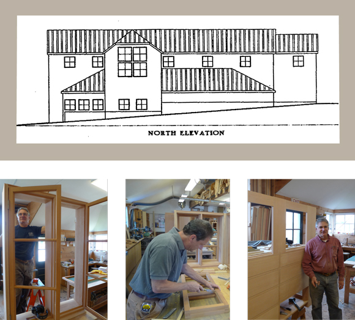

Staff
We are proud to field a team for our projects that will consistently be marked by senior leadership and steadfast dedication to the standards and success of each project. The Cold Mountain culture promotes the personal investment of each of our administrative, field, and workshop staff to every aspect of our projects. They communicate clearly and work diligently toward that goal.
Administrative
Jay Fischer
Owner and Project Manager
Janet Simmons
Administrative
and Operating Manager
Thaddeus Heintzman
Project Coordinator
Field
Rick Tyler
Project Manager
Rob Scheibel
Supervisor
Brian Patterson
Supervisor
Justin Overlook
Foreman
Workshop
John Gertner
Philip Rule
Cold Mountain Builders Workshop
Our workshop is staffed by highly experienced professionals who have been immersed in fine woodworking for the past thirty years. They continue to design and build kitchens, casework, fixtures and furniture for our projects as well as for independent assignments.
Habitat for Humanity
I have been involved in several Habitat for Humanity projects both in Maine, in Alabama’s Black Belt and the Mississippi Delta. I have served on the local board for years where we are focused on building sound housing with a sustainable model. Our current focus includes the development of four - 600 square foot houses in Rockland, Maine on the site of former housing for millworkers.
www.midcoasthabitat.org